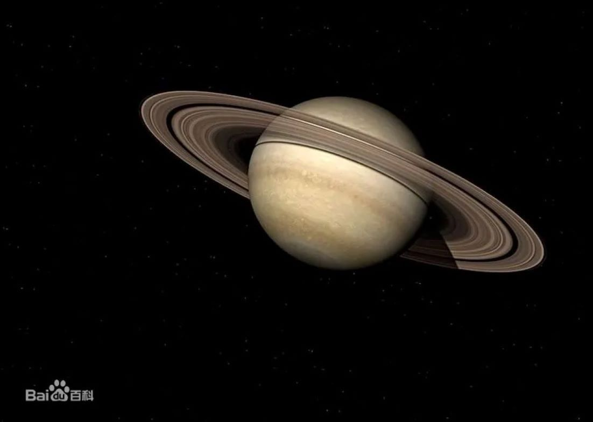

|  | 土星（英文：Saturn，拉丁文：Saturnus，符号：♄），是太阳系八大行星之一，到太阳的距离排在太阳系第六位。古代中国土星是中国古代人根据五行学说结合肉眼观测到的土星的颜色（黄色）来命名的，亦称之为镇星（常写作填星）。土星的英文名称Saturn来自于罗马神话中的农业之神萨图恩。 土星是气态巨行星，主要由氢组成，还有少量的氦与少量元素，内部的核心包括岩石和冰，外围由数层金属氢和气体包覆着。最外层的大气层在外观上通常情况下都是平淡的，虽然有时会有长时间存在的特征出现。土星的风速高达1800千米/时，风速明显比木星快。土星的行星磁场强度介于地球和更强的木星之间。土星有一个显著的行星环系统，主要的成分是冰的微粒和较少数的岩石残骸以及尘土。2023年确认的土星的卫星有145颗 [13] [16]。其中，土卫六是土星系统中最大和太阳系中第二大的卫星，仅次于木卫三，比行星中的水星还要大，并且土卫六是太阳系仅有的拥有明显大气层的卫星。土星自转一周等于10小时33分38秒，大约是地球的半天时长。 |
返回 |